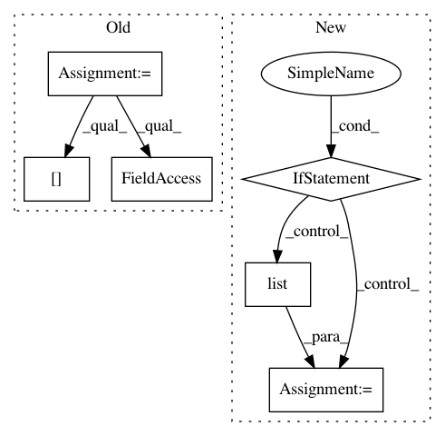

baecce5a6fbe4576ca8348a93dc56f07e7ba84f6,niftynet/contrib/csv_reader/csv_reader.py,CSVReader,_parse_csv,#CSVReader#Any#Any#,72
Before Change
)
df.index = df["subject_id"]
assert set(df.index) == set(self.subject_ids)
df = df.loc[self.subject_ids]
if to_ohe and len(df.columns[1:])==1:
_dims = len(list(df[df.columns[1]].unique()))
_indexable_output = self.to_ohe(df["label"].values, _dims)
return df, _indexable_output, _dims
elif not to_ohe:
_dims = len(df.columns[1:])
_indexable_output = list(df.iloc[:, 1:].values)
return df, _indexable_output, _dims
else:
tf.logging.fatal("Unrecognised input format for {}".format(path_to_csv))
After Change
_dims = len(list(df[1].unique()))
_indexable_output = self.to_ohe(df[1].values, _dims)
return df, _indexable_output, _dims
elif not to_ohe and len(df.columns==1):
_dims = 1
_indexable_output = self.to_categorical(df[1].values, df[1].unique())
return df, _indexable_output, _dims
elif not to_ohe:
_dims = len(df.columns)
_indexable_output = list(df.values)
return df, _indexable_output, _dims
else:
tf.logging.fatal("Unrecognised input format for {}".format(path_to_csv))
In pattern: SUPERPATTERN
Frequency: 3
Non-data size: 6
Instances
Project Name: NifTK/NiftyNet
Commit Name: baecce5a6fbe4576ca8348a93dc56f07e7ba84f6
Time: 2019-06-05
Author: ucabtmv@ucl.ac.uk
File Name: niftynet/contrib/csv_reader/csv_reader.py
Class Name: CSVReader
Method Name: _parse_csv
Project Name: catalyst-team/catalyst
Commit Name: aab3902d4a7d55f5a86058854adc36b8a12c873f
Time: 2019-05-20
Author: ekhvedchenya@gmail.com
File Name: catalyst/dl/callbacks/base.py
Class Name: OptimizerCallback
Method Name: on_batch_end
Project Name: keras-team/autokeras
Commit Name: 16474aee0c575e615c78d32f2a170c3d7f8f0082
Time: 2017-12-30
Author: jhfjhfj1@gmail.com
File Name: autokeras/graph.py
Class Name: Graph
Method Name: produce_model